Inside the app
How I actually read a market, one method per article, with the screen that does the work beside every step. 3 articles so far, more coming.
How I read a theme instead of a stock
A single name will lie to you about how strong an idea is. Eleven names beside it will not.
Someone sends you a ticker. It is up 31% in a month and the story is good. You look at the chart, the chart agrees, and the only question left in your head is whether you are too late.
That is the wrong question. The one that decides the trade is what the eleven names sitting next to it did over the same month.
If they went nowhere, you are not looking at a theme. You are looking at one company with a company-sized reason behind it, and that reason has already been priced. If they all moved together, something bigger is buying the category, and that takes longer than one quarter to finish.
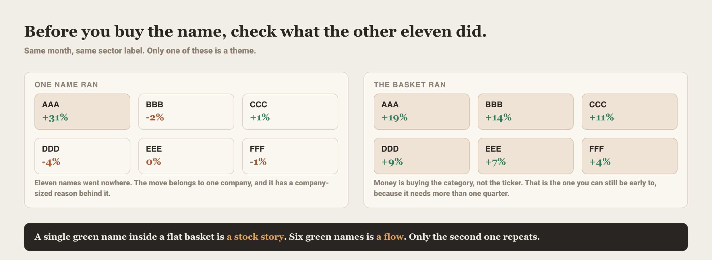
Why the basket is the honest unit
Money that moves a whole category is slow money. It is allocation, and allocation shows up as ten names drifting up together rather than one name gapping. That slowness is the entire opportunity: you can be late to the ticker and still be early to the theme.
The reverse is also true and it costs more. A category that has already run is a category where the allocation is done. The last chart still looks perfect. It is the eleven names around it that tell you the buying finished three weeks ago.
Twenty-six baskets, rebuilt every day, each one colored by how hot it runs right now. Heat blends relative strength, momentum, breadth and options flow into one number between 0 and 100, so a category that is quietly waking up looks different from one that has already paid.
Open /themes →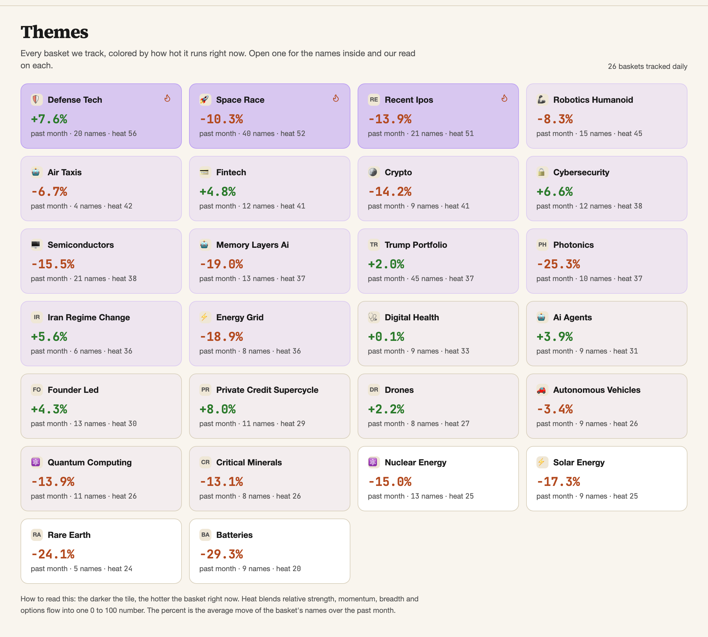
I read this board before I read any single chart. It takes about fifteen seconds and it kills most ideas outright. A name from a basket sitting at the bottom of this grid needs a reason that has nothing to do with its theme, and usually there is not one.
The three questions
Once a basket looks alive, I put it through the same three questions, in this order. A no on any of them and I am trading a headline.
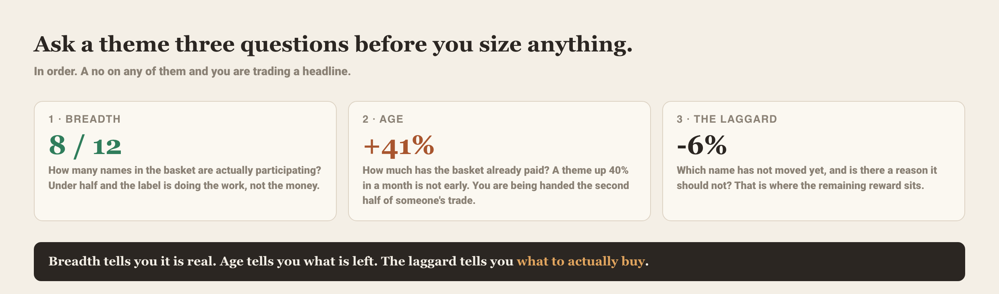
Breadth first, because a basket carried by one name is that name wearing a costume. Then age, because a theme that has already paid 40% is handing you the second half of someone else's trade. Then the laggard, because that is where the reward that is left actually sits, provided you can find no good reason it deserves to lag.
Open any theme and you get the members, what each one did, and where the money went inside the category. This is where the laggard question gets answered in a few seconds rather than a spreadsheet evening.
Open /themes →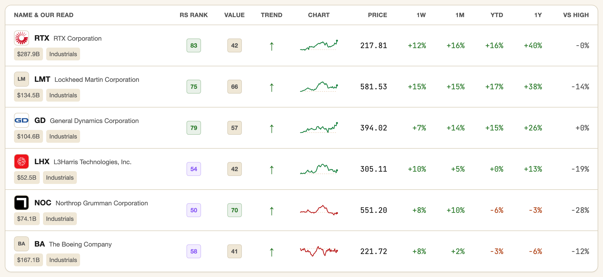
Where sectors come back in
A theme can be alive while its whole sector is being sold, and that trade is much harder than it looks on the basket page. So the last check is the layer above: whether the sector this category lives in is being bought or drained.
When both point the same way, the position can be sized properly. When they fight, I either wait or I take a much smaller line and accept that I am early.
Sector and sub-industry strength on one page, so you can see whether the rotation is behind your basket or against it before you commit anything.
Open /sectors →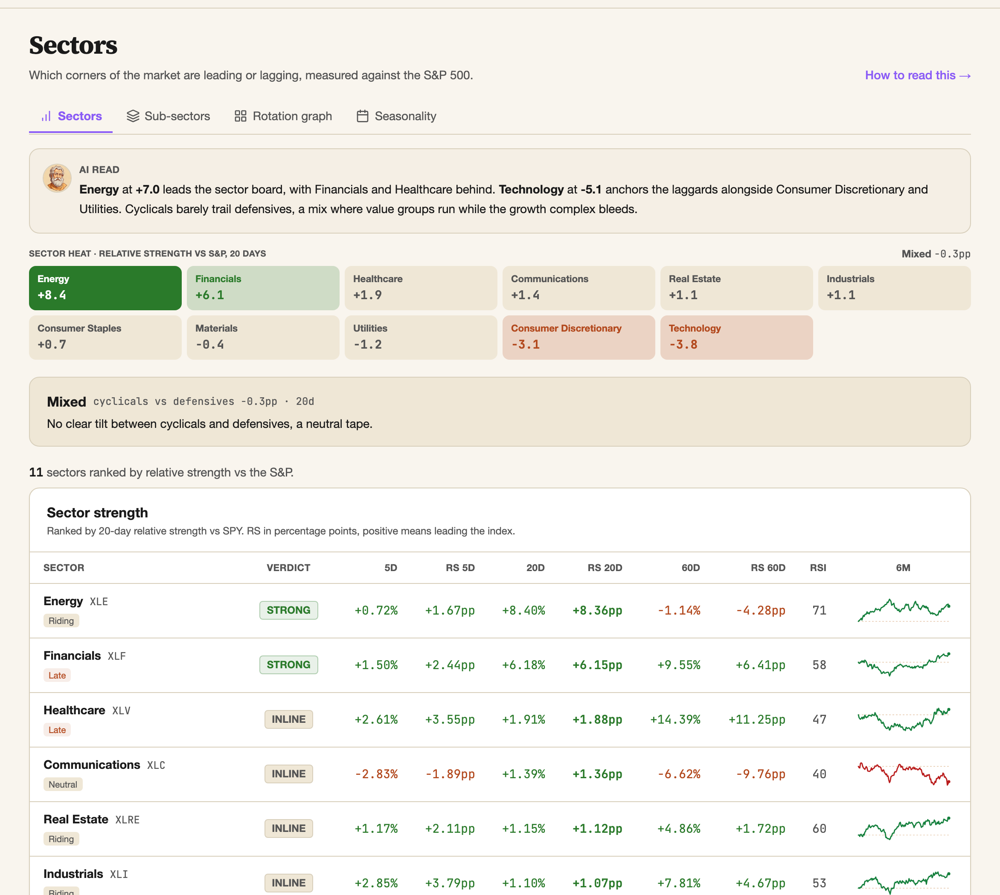
What this looks like in the letter
This is not theory I keep for myself. When the rotation turned at the end of June, the whole letter that week was this exact read: the index fell because its heaviest names fell, while the market underneath it rose. One number on a screen said one thing. The baskets said the opposite.
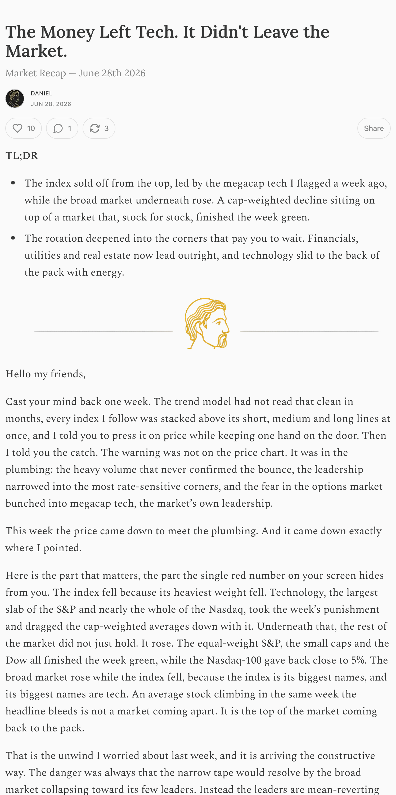
The letter gives you the read. The app gives you the board it came from, updated every day, so you can run it on your own names instead of waiting for me on a Saturday.
- A green name inside a flat basket is a stock story. Six green names is a flow, and only the second one repeats.
- Breadth tells you the theme is real, age tells you what is left, the laggard tells you what to buy.
- Check the sector before you size. A live theme inside a sector being drained is a smaller position, not a bigger one.
How I size a position
Bad setups cost you a trade. Bad sizing costs you the account. Only one of those two is fully in your hands.
Most people pick the size last, and they pick it from how the idea feels. Strong conviction, bigger line. That is backwards, and it is the single most expensive habit in retail trading.
The size is not a decision about how right you are. It is arithmetic that falls out of one thing you actually control: where you admit you were wrong.
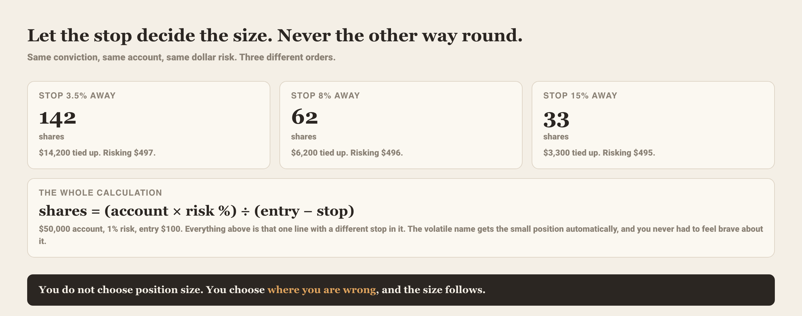
Read those three columns again
Nothing changed between them except the distance to the stop. The share count went from 142 to 33, and the money committed went from $14,200 to $3,300. Your risk stayed flat at roughly $500 the whole way across.
That is the property worth having. The volatile name that needs room automatically gets a smaller line, and you never had to be disciplined about it in the moment. The arithmetic was disciplined for you.
Set your account and the risk you will take, give it an entry and a stop, and it returns the share count, the dollars at risk, the reward-to-risk and the R targets. Or give it a ticker and it pulls the levels off the chart itself.
Open /positions →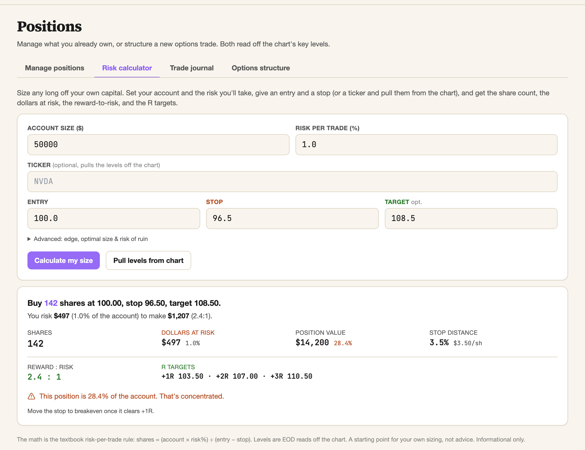
The trap that screenshot just caught
Look at the last line of that result. The sizing is correct. The risk is exactly 1% of the account. And the tool still tells you the position is 28% of everything you have.
That gap is where accounts die. A stop is a request, not a guarantee. It works fine on an ordinary Tuesday and it means very little on the morning the name gaps 20% below it on news. When that happens, what you lose is not your planned 1%. It is a slice of that 28%.
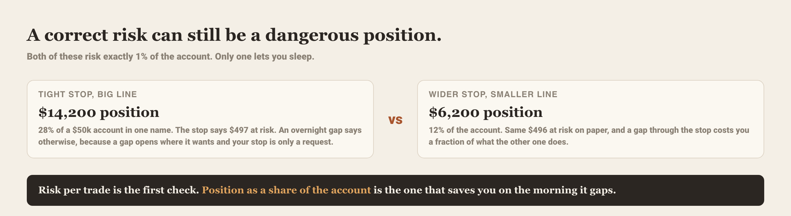
So there are two checks, not one. Risk per trade tells you what a normal loss costs. Position as a share of the account tells you what an abnormal one costs. Traders who only run the first check are fine for months and then are not.
Then you have to log it
Sizing rules are easy to hold for a week. What makes them stick is seeing, in your own numbers, that the trades where you broke the rule are the trades that hurt.
I care about the result in R, not in dollars. A trade that made $400 on a $200 risk is a better trade than one that made $600 on a $600 risk, and the dollar column hides that completely.
Log each trade as it closes and read the outcomes in R multiples. It answers the only question that matters over a year: is the edge in the entries, or in the sizing?
Open /positions →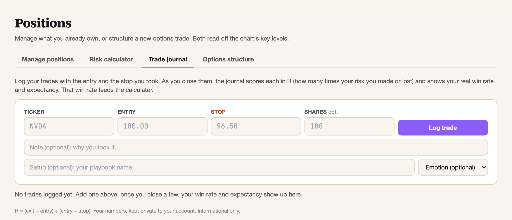
When the answer is options
Sometimes the honest stop is so far away that the stock position gets too small to be worth the attention. That is not a reason to move the stop closer. It is a reason to change the instrument, so the risk is capped by construction instead of by a request.
Give it the same view and the same levels, and it lays out the structures that express it, with what each one costs and what each one can lose. The point is the comparison, not a recommendation.
Open /positions →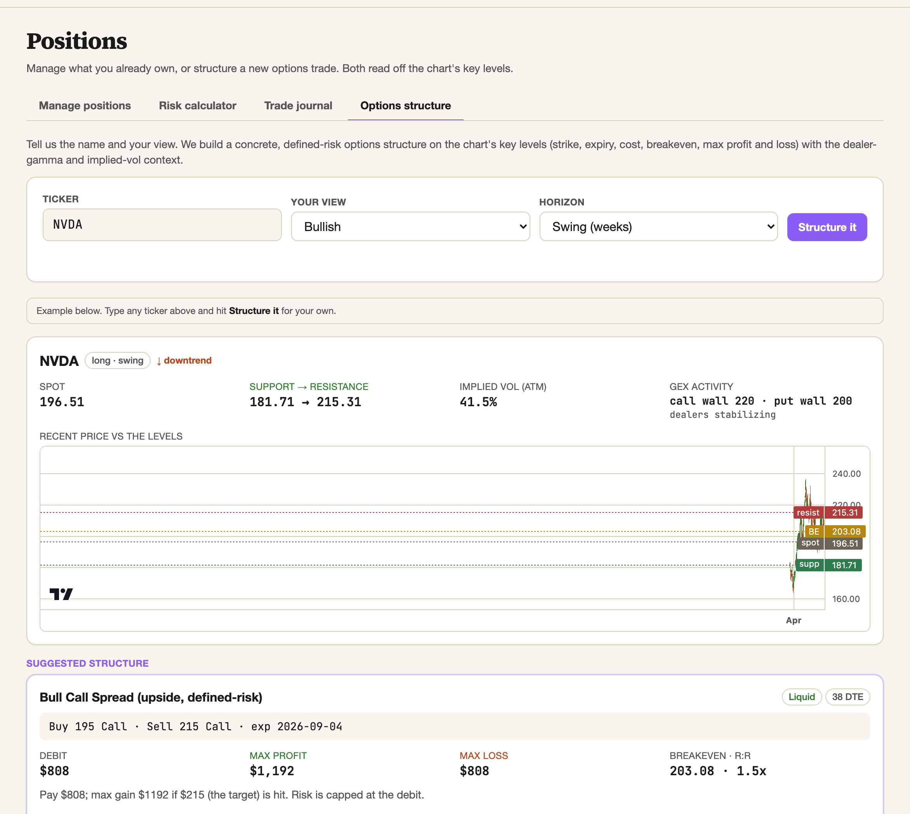
The two minutes before the order
This is the routine I wrote up in the letter earlier this month: pull the chart, find the levels, see who is actually in the name, check the sector, then size it. The whole point of building the app was to make that sequence take two minutes instead of an evening.
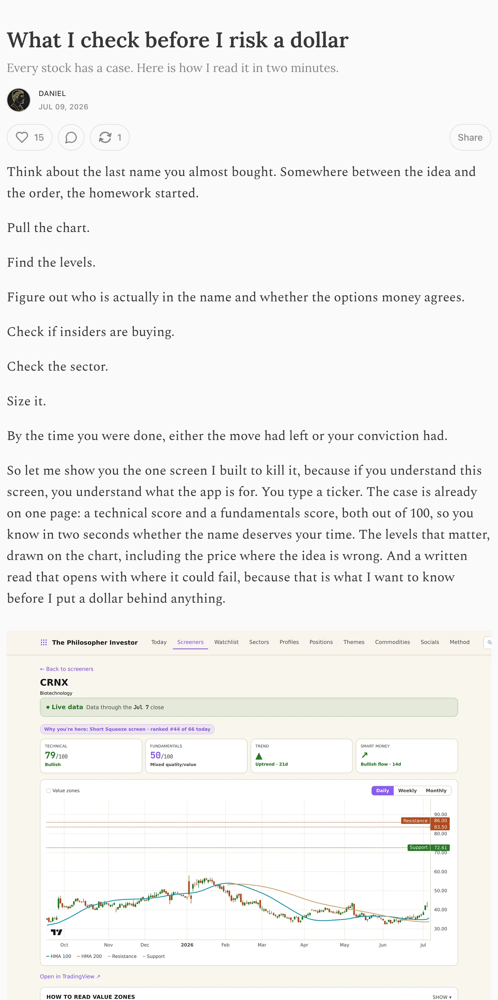
- You do not choose position size. You choose where you are wrong, and the size follows.
- Run two checks, not one: risk per trade for a normal loss, position as a share of the account for a gap.
- Log outcomes in R. Dollars hide whether your edge is in the entries or in the sizing.
How I read crypto without opening a chart
Price tells you what the last trade was. It says nothing about who is left to trade.
Crypto charts are the least useful charts in finance. The market runs all day and all weekend, it is levered to the roof, and most of the volume belongs to people who will be forced out of their position rather than choosing to leave it.
So a candle tells you almost nothing. What moves this market is positioning: who is crowded, who is scared, and how much cash is standing on the sideline. All three are measurable, and none of them are on a price chart.
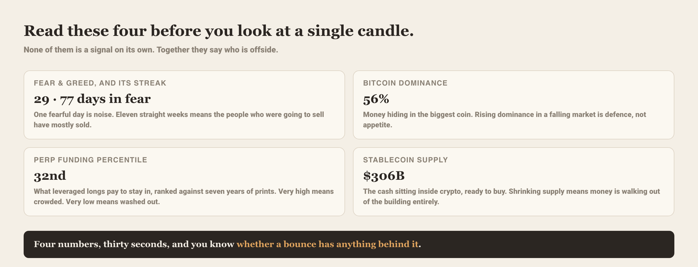
Why the streak matters more than the level
Everyone quotes the fear and greed index. Almost nobody looks at how long it has been sitting there, and that is the part that carries information.
One fearful day is noise, a mood that resolves by lunchtime. Eleven straight weeks in fear is different in kind. It means the people who were going to capitulate have largely done it, and the seller who is left has to be a new seller. That is a much harder thing for a market to produce.
The same logic runs through funding. What matters is not that longs are paying, it is where today's payment ranks against seven years of prints. Somewhere near the bottom of that range means the levered crowd has already been cleaned out.
The number nobody watches
Stablecoin supply is the dry powder of this market. It is the cash that already lives inside crypto, has cleared every hurdle to get there, and can be spent in one click.
When that pile grows while everyone is miserable, you have fuel and no willingness. That combination has preceded most of the moves worth catching. When it shrinks, money is not rotating between coins, it is leaving the building, and a bounce into a shrinking cash pile has nothing behind it.
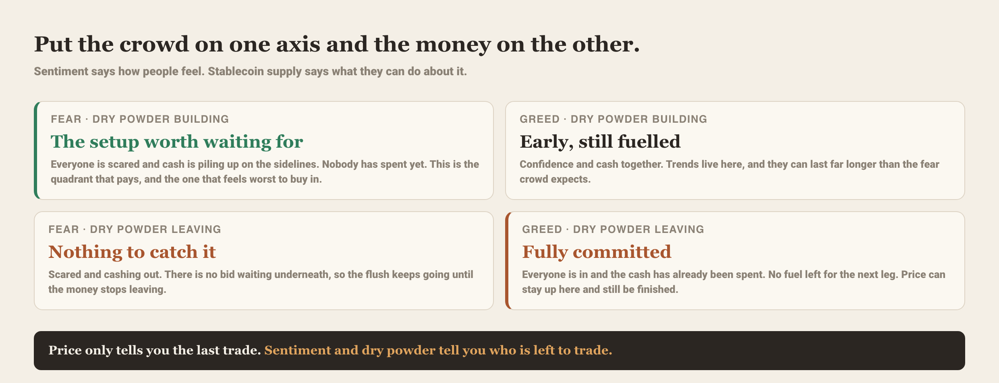
Sentiment and its streak, Bitcoin dominance, perp funding ranked against its own history, stablecoin supply, and breadth across the majors. All on one screen, refreshed daily, with a written read on what the combination is saying.
Open /crypto →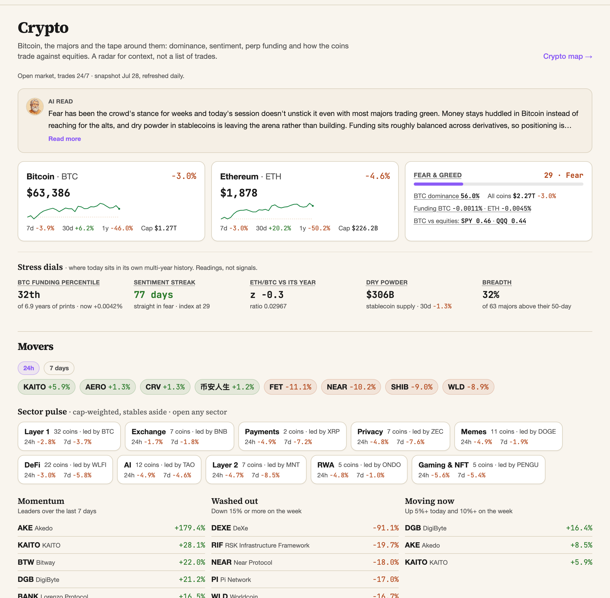
Read that screenshot as a sentence rather than a dashboard. The crowd is frightened, which is constructive. But dominance is high, so what money remains is hiding in the biggest coin rather than reaching for risk. And the cash pile is shrinking. Fear with money walking out is the quadrant where nothing catches the fall.
Dominance is a risk-appetite gauge
Bitcoin dominance is its share of the whole crypto market cap, and it works as a straight read on appetite. Rising dominance in a falling market is defence, everyone crowding into the one asset they trust. Falling dominance while the market rises is appetite, money reaching down the risk curve.
That single ratio settles the question people spend whole threads arguing about, which is whether an altcoin move is a real broadening or just Bitcoin dragging everything along behind it.
The whole market as one picture, sized by market cap and colored by the move, so you can see in one glance whether the strength is broad or concentrated in three names. This page is open to everyone, no account needed.
Open /crypto/heatmap →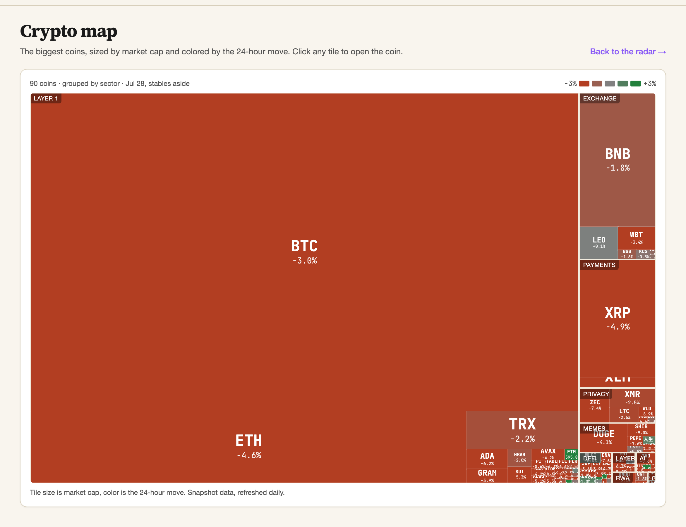
One chart is never the whole story
This is the same argument I made in the letter about equities in June, and it holds harder in crypto: a single chart is one layer of a market that has several, and the layer everyone stares at is the one with the least information in it.
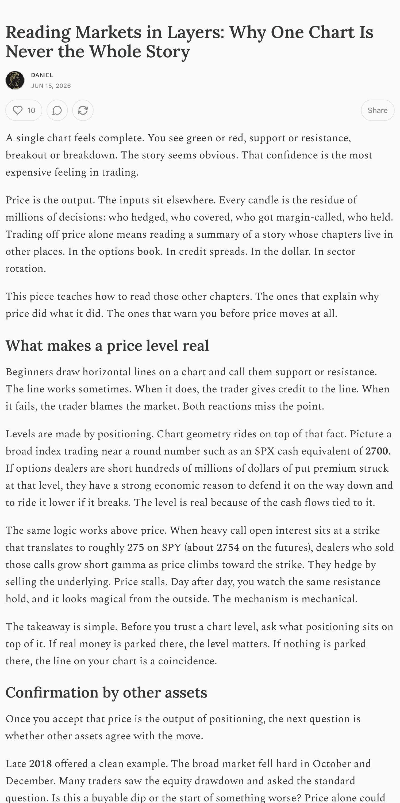
Four numbers, thirty seconds, before any candle. That is the whole method, and it is on one page.
- The fear and greed streak carries more information than its level. Eleven weeks means the sellers have largely gone.
- Stablecoin supply is the dry powder. Fear plus growing cash is the setup, fear plus shrinking cash is a falling knife.
- Rising Bitcoin dominance in a falling market is money hiding, not money arriving.